2023-09-05
计算机组织结构
by rtw
课程回顾：什么是计算机？
通用电子数字计算机 所有计算机在给予足够时间和容量存储的条件下都可以完成相同的计算
什么是组织与结构：
组织：对于编程人员不可见
操作单元及其相互连接
结构：可见
直接影响程序逻辑执行的属性 比如：是否有乘法指令？
IA-32指令概述
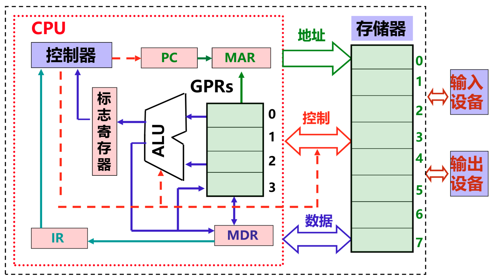
以上是计算机系统的大致数据通路，而取指执行的大致步骤如下
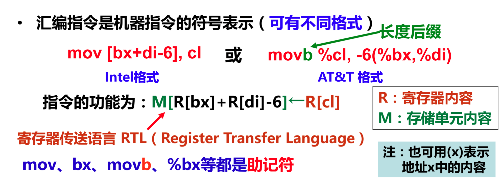
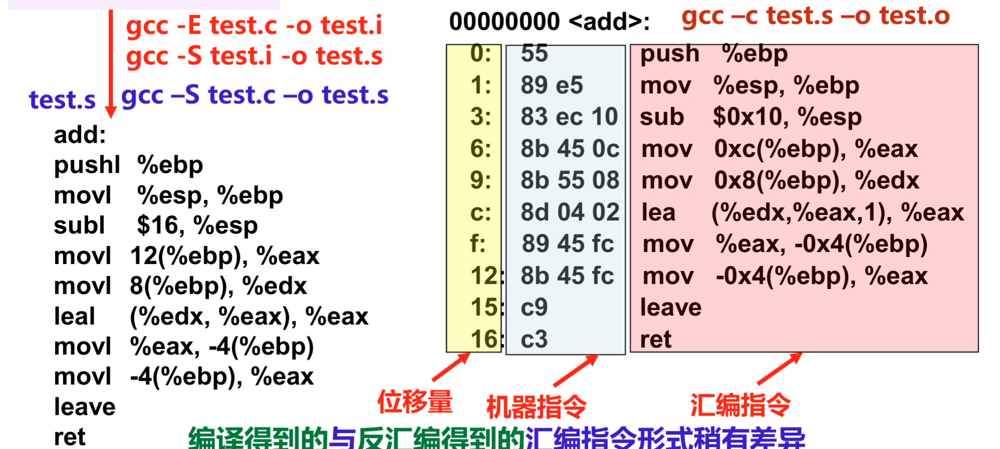
可以看到编译的汇编指令，和反汇编指令差一个l,w等表示长短的符号。
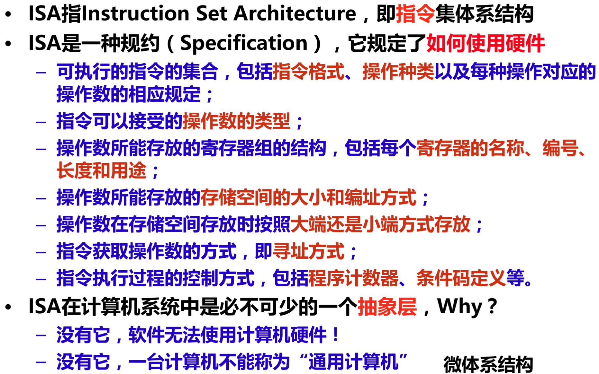
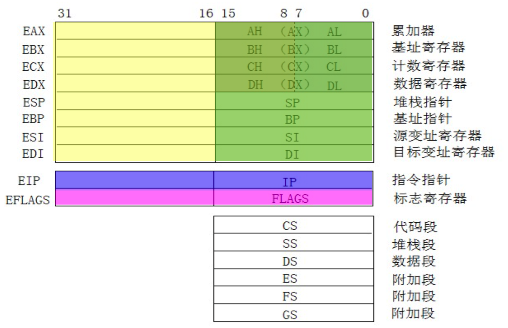
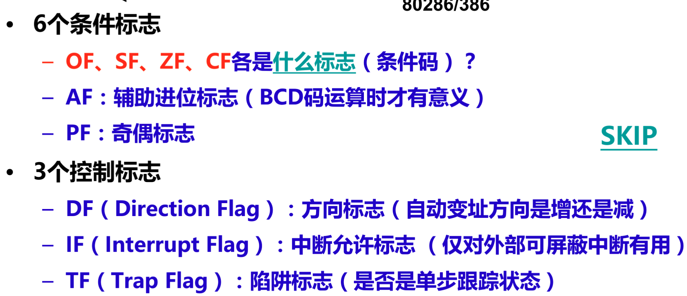
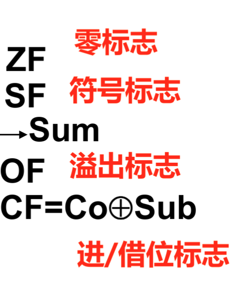
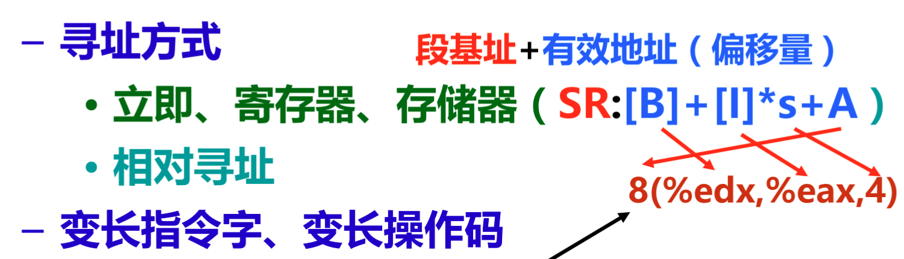
存储器
Memory
存储器（Memory）由一定数量的单元构成，每个单元可以被唯一标识，每个单元都有存储一个数值的能力
地址：单元的唯一标识符（采用二进制）
地址空间：可唯一标识的单元总数
寻址能力：存储在每个单元中的信息的位数
大多数存储器是字节寻址的，而执行科学计算的计算机通
常是64位寻址的
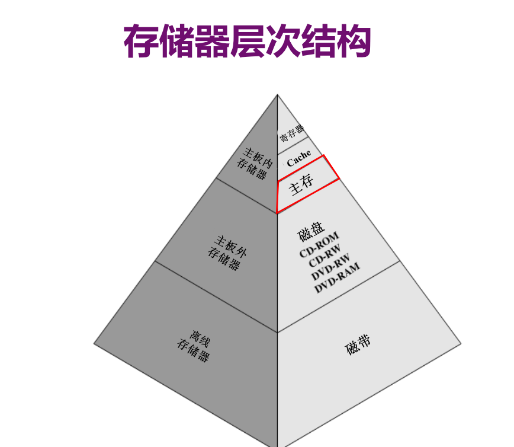
RAM
特性：易失性
类别：DRAM and SRAM ——>dynamic and static
DRAM需要电容充电，需要周期地充电刷新以维护数据存储
SRAM只要有电源，就可以一直维持数据
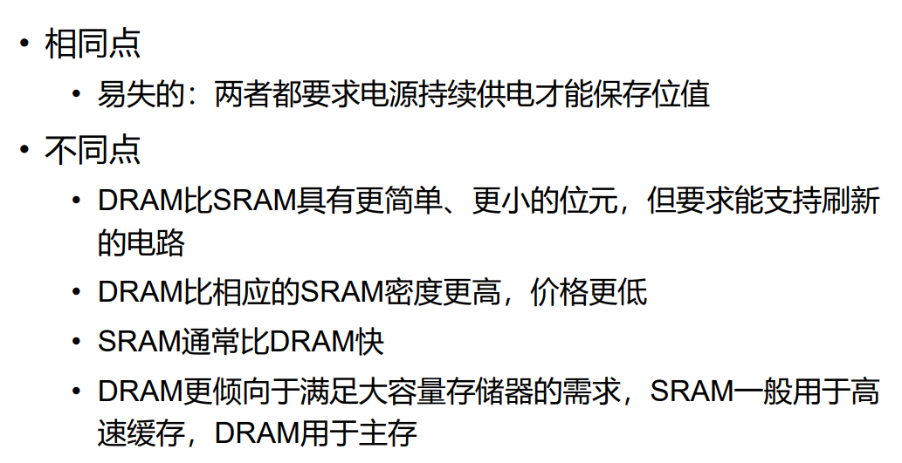
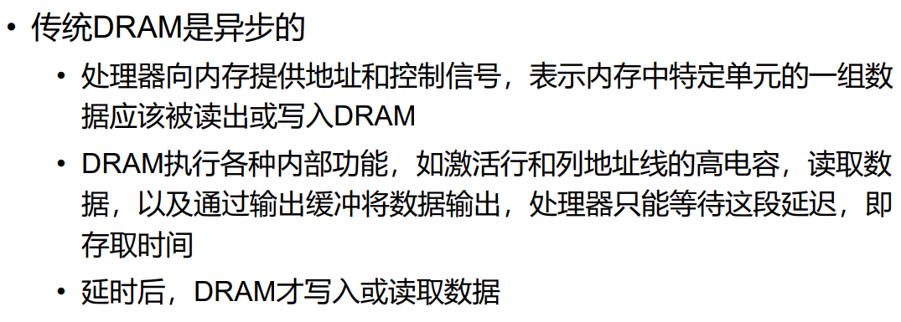
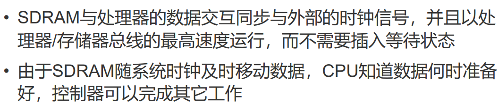
DDR ➔ DDR2 ➔ DDR3 ➔ DDR4
增加操作频率
增加预取缓冲区
刷新方式
集中式刷新（Centralized refresh）
停止读写操作，并刷新每一行
刷新时无法操作内存
分散式刷新（Decentralized refresh）
在每个存储周期中，当读写操作完成时进行刷新
会增加每个存储周期的时间
异步刷新（Asynchronous refresh）
每一行各自以64ms间隔刷新
效率高：常用
模块组织:
位扩展：地址线不变，数据线增加
使用 8 块 4K 1 bit 的芯片组成 4K 8
bit 的存储器字扩展：地址线增加，数据线不变
使用 4 个 16K 8 bit 的芯片组成 64K 8 bit 的存储器
字、位同时扩展：地址线增加，数据线
增加使用 8 个 16K 4 bit 的芯片组成 64K 8 bit 的存储器
计算机组成原理中，我们一般用n*n 个位****存储体 来组成存储矩阵 ，其中n是2的多次幂，也就是n=2^x。而4k8位中的4k指的就是*存储矩阵 中位存储体 的个数，即nn=4k=4096位。所以4096开根号得出n=64，那么这个4k的意思就很明显了，由6464个位存储体 构成的一个6464*存储矩阵。
4k8位的意思就是：由8个6464存储矩阵，并联 构成的存储体
Cache Mapping
In simpler words, cache mapping refers to a technique using which we bring the main memory into the cache memory. Here is a diagram that illustrates the actual process of mapping:
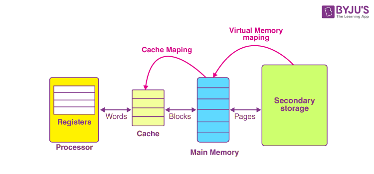
Techniques of Cache Mapping
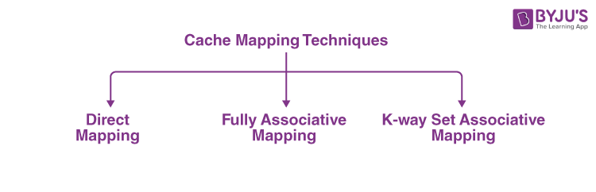
1. Direct Mapping
In the case of direct mapping, a certain block of the main memory would be able to map a cache only up to a certain line of the cache. The total line numbers of cache to which any distinct block can map are given by the following:
Cache line number = (Address of the Main Memory Block ) Modulo (Total number of lines in Cache)
For example,
Let us consider that particular cache memory is divided into a total of ‘n’ number of lines.
Then, the block ‘j’ of the main memory would be able to map to line number only of the cache (j mod n).
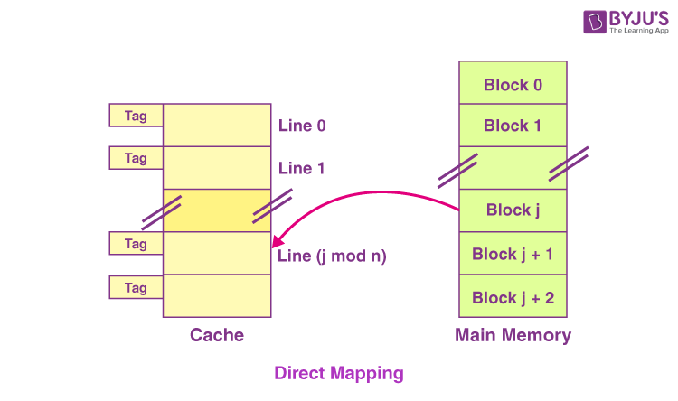
全关联映射（Fully Associative Mapping）和直接映射（Direct Mapping）是两种不同的缓存映射方式，它们在缓存设计和性能特征上有以下区别：
映射方式 ：直接映射将每个主存块映射到缓存的固定位置，而全关联映射允许每个主存块在缓存中的任意位置。
关联度 ：直接映射是一种低关联度的映射方式，每个主存块只能映射到缓存中的一个特定位置。全关联映射是一种高关联度的映射方式，每个主存块可以映射到缓存中的任意缓存行。
冲突 ：直接映射可能导致冲突，当多个主存块映射到同一个缓存行时，会发生冲突。全关联映射可以避免冲突，因为每个主存块可以映射到任意缓存行。
替换策略 ：在直接映射中，替换策略是固定的，当发生冲突时，新的主存块会替换掉已经存在于缓存中的主存块。在全关联映射中，替换策略可以灵活选择，可以根据缓存的命中率和其他策略来决定替换哪个缓存行。
访问延迟 ：直接映射的访问延迟相对较低，因为每个主存块只需检查固定位置的缓存行即可。全关联映射的访问延迟相对较高，因为需要对缓存中的所有缓存行进行标记比较和搜索操作。
硬件复杂性 ：直接映射的硬件实现相对简单，只需要一个简单的地址映射逻辑。全关联映射的硬件实现相对复杂，需要额外的硬件来进行标记比较和搜索操作。
2. Fully Associative Mapping
In the case of fully associative mapping,
The main memory block is capable of mapping to any given line of the cache that’s available freely at that particular moment.
It helps us make a fully associative mapping comparatively more flexible than direct mapping.
3. K-way Set Associative Mapping
In the case of k-way set associative mapping,
The grouping of the cache lines occurs into various sets where all the sets consist of k number of lines.
Any given main memory block can map only to a particular cache set.
However, within that very set, the block of memory can map any cache line that is freely available.
The cache set to which a certain main memory block can map is basically given as follows:
Cache set number = ( Block Address of the Main Memory ) Modulo (Total Number of sets present in the Cache)
The k-way set associative mapping refers to a combination of the direct mapping as well as the fully associative mapping.
It makes use of the fully associative mapping that exists within each set.
Therefore, the k-way set associative mapping needs a certain type of replacement algorithm.
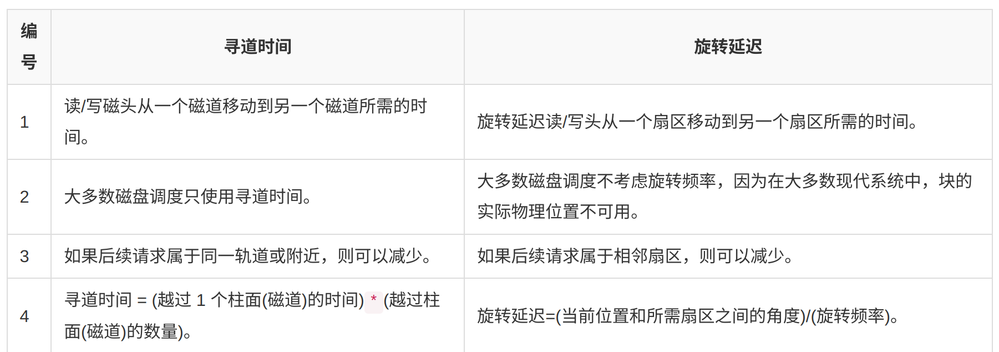
RAID磁盘阵列
RAID （ Redundant Array of Independent Disks ）即独立磁盘冗余阵列，简称为「磁盘阵列」，其实就是用多个独立的磁盘组成在一起形成一个大的磁盘系统，从而实现比单块磁盘更好的存储性能和更高的可靠性。
RAID 0
RAID0 是一种非常简单的的方式，它将多块磁盘组合在一起形成一个大容量的存储。当我们要写数据的时候，会将数据分为N份，以独立的方式实现N块磁盘的读写，那么这N份数据会同时并发的写到磁盘中，因此执行性能非常的高。
就是把x块同样的硬盘 用硬件的形式通过智能磁盘控制器或用操作系统中的磁盘驱动程序以软件的方式串联在一起，形成一个独立的逻辑驱动器 ，容量是单独硬盘的x倍,在电脑数据写时被依次写入到各磁盘中，当一块磁盘的空间用尽时，数据就会被自动写入到下一块
磁盘中，它的好处是可以增加磁盘的容量。速度与其中任何一块磁盘的速度相同，如果其中的任何一块磁盘出现故障，整个系统将会受到破坏 ，可靠性是单独使用一块硬盘的1/n。
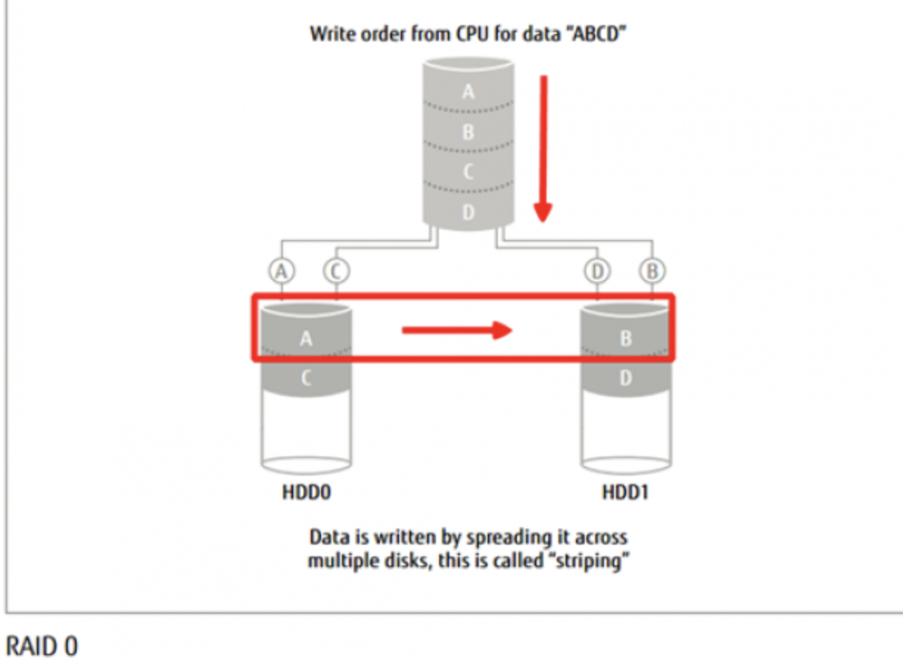
RAID 1
RAID1 是磁盘阵列中单位成本最高的一种方式。因为它的原理是在往磁盘写数据的时候，将同一份数据无差别的写两份到磁盘，分别写到工作磁盘和镜像磁盘，那么它的实际空间使用率只有50%了，两块磁盘当做一块用，这是一种比较昂贵的方案。
RAID1其实与RAID0效果刚好相反。RAID1 这种写双份的做法，就给数据做了一个冗余备份。这样的话，任何一块磁盘损坏了，都可以再基于另外一块磁盘去恢复数据，数据的可靠性非常强，但性能就没那么好了。
（1）RAID 1的每一个磁盘都具有一个对应的镜像盘，任何时候数据都同步镜像，系统可以从一组镜像盘中的任何一个磁盘读取数据。
（2）磁盘所能使用的空间只有磁盘容量总和的一半，系统成本高。
（3）只要系统中任何一对镜像盘中至少有一块磁盘可以使用，甚至可以在一半数量的硬盘出现问题时系统都可以正常运行。
（4）出现硬盘故障的RAID系统不再可靠，应当及时的更换损坏的硬盘，否则剩余的镜像盘也出现问题，那么整个系统就会崩溃。
（5）更换新盘后原有数据会需要很长时间同步镜像，外界对数据的访问不会受到影响，只是这时整个系统的性能有所下降。
_ （6）RAID 1磁盘控制器的负载相当大，用多个磁盘控制器可以提高数据的安全性和可用性。 _
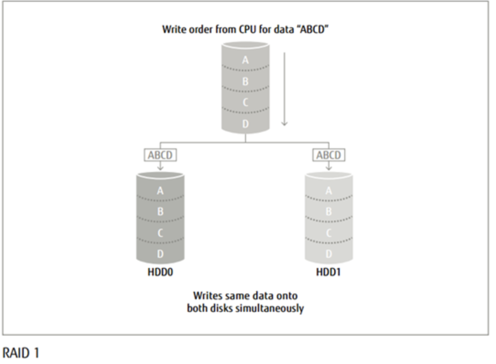
RAID 2
可以认为是RAID0的改进版，加入了汉明码(Hanmming Code)错误校验。电脑在写入数据时在一个磁盘上保存数据的各个位，同时把一个数据不同的位运算得到的**海明校验码** 保存另一组**校验磁盘** 上，使用校验磁盘作为错误检查和纠正ECC(Error Correcting Code)
盘。如下图，A0-A3四个盘是数据盘，Ax-Az三个盘是校验盘。由于海明码可以在数据发生错误的情况下将错误校正，以保证输出的正确 。但海明码使用数据冗余技术，使得输出数据的速率取决于驱动器组中速度最慢的磁盘 。RAID 2控制器的设计简单。
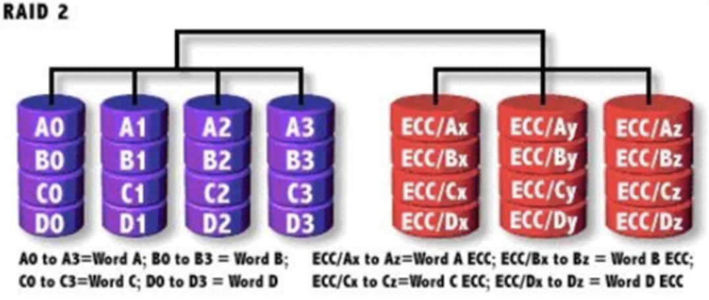
RAID 3
RAID 2的缺点主要是将数据以bit位作为单位来分割，将原本物理连续的扇区转变成了物理不连续、逻辑连续的，这样导致效率低下。RAID3 就准备从根本上就绝这个问题。
在一个磁盘阵列中，一般情况下多于一个磁盘出现故障的几率是很小的，所有一般情况下，RAID3的安全性还是有保障的。
同RAID2一样，由于需要多磁盘同时联动，同时还需要校验。显然，RAID3不适用于有大量写操作的情况，因为这样会使得校验盘的负荷较大，降低RAID系统的性能。RAID3 常用于写操作较少，读操作较多的应用环境，比如数据库和WEB服务器。
校验算法只能判断数据是否有误，不能判断出有那一位有误，更不能更正错误 。
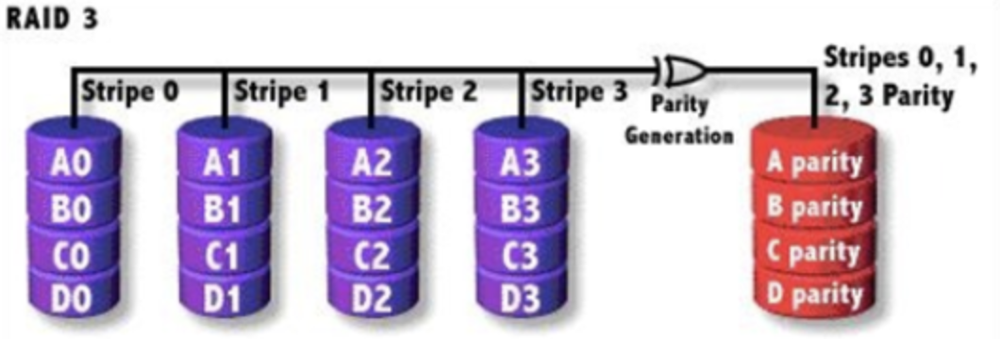
RAID 4
RAID4即带奇偶校验码的独立磁盘结构 ，RAID 4和RAID 3很象，它对数据的访问是按数据块进行的，也就是按磁盘进行的，每次是一个盘，RAID 4的特点和RAID 3也挺象，不过在失败恢复时，它的难度可要比RAID 3大得多了，控制器的设计难度也要大许多，而且访问
数据的效率不怎么好。
RAID 4 由块级条带化组成。在此级别中，将整个数据集或数据块写入数据磁盘，然后生成奇偶校验并将其存储在不同的磁盘集上。这个级别最多可以克服一个磁盘故障。如果发生多个磁盘故障，则无法恢复数据。RAID 3 和 RAID 4 都需要至少三个磁盘来实现 RAID。
RAID 5
用简单的语言来表示，至少使用3块硬盘（也可以更多）组建RAID5磁盘阵列，当有数据写入硬盘的时候，按照1块硬盘的方式就是直接写入这块硬盘的磁道，如果是RAID5的话这次数据写入会根据算法分成3部分，然后写入这3块硬盘，写入的同时还会在这3块硬盘上写入校验信息，当读取写入的数据的时候会分别从3块硬盘上读取数据内容，再通过检验信息进行校验。当其中有1块硬盘出现损坏的时候,就从另外2块硬盘上存储的数据可以计算出第3块硬盘的数据内容。也就是说raid5这种存储方式只允许有一块硬盘出现故障，出现故障时需要尽快更换。当更换故障硬盘后，在故障期间写入的数据会进行重新校验。 如果在未解决故障又坏1块，那就是灾难性的了。 做raid 5阵列所有磁盘容量必须一样大，当容量不同时，会以最小的容量为准。 最好硬盘转速一样，否则会影响性能，而且可用空间=磁盘数n-1，Raid 5 没有独立的奇偶校验盘，所有校验信息分散放在所有磁盘上， 只占用一个磁盘的容量。
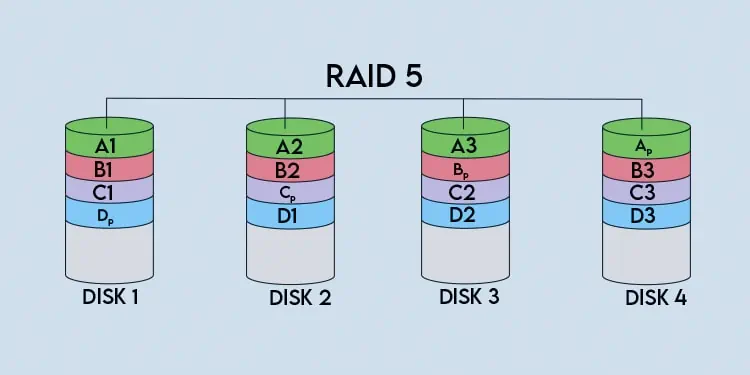
RAID6
与raid5 唯一的不同就是两个校验位在不同的盘上，再加一个校验盘Q， 和P分开独立进行计算，可以处理至多三个盘出错的情况
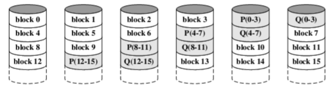
外部存储器
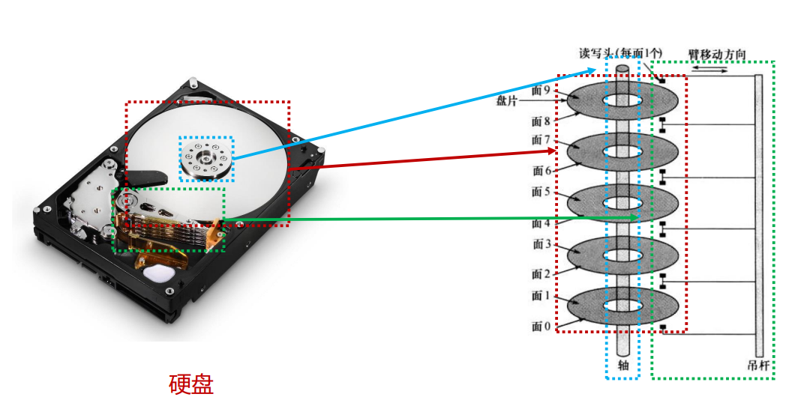
磁盘存储器每个盘片表面有一个读写磁头，所有磁头通过机械方式固定在一起，同时移动
在任何时候，所有磁头都位于距磁盘中心等距离的磁道上
在读或写操作期间，磁头静止，而盘片在其下方旋转
磁头的数量
单磁头：读写公用同一个磁头（软盘、早期硬盘）
双磁头：使用一个单独的磁头进行读取（当代硬盘）
磁盘的数据组织
盘片上的数据组织呈现为一组同心圆环，称为磁道（track）
数据以扇区（sector）的形式传输到磁盘或从传出磁盘
- 默认值为512B
相邻磁道之间有间隙（gap），相邻的扇区之间也留有间隙（因此数据较大跨磁道时需要时间）
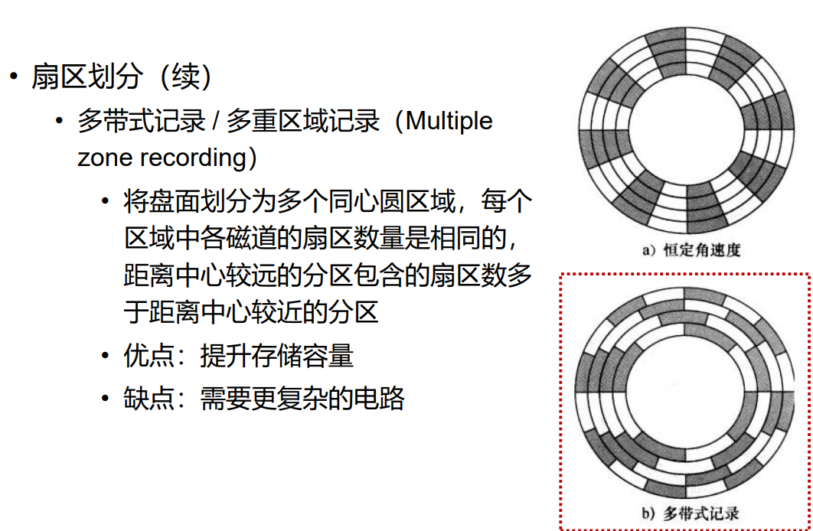
所有盘片上处于相同的相对位置的一组磁道被称为柱面
(cylinder)
硬磁盘存储器：I/O访问时间
寻道时间（seek time）：磁头定位到所需移动到的磁道所花费的时间
旋转延迟（rotational delay）：等待响应扇区的起始处到达磁头所需的时间
传送时间（transfer time）：数据传输所需的时间
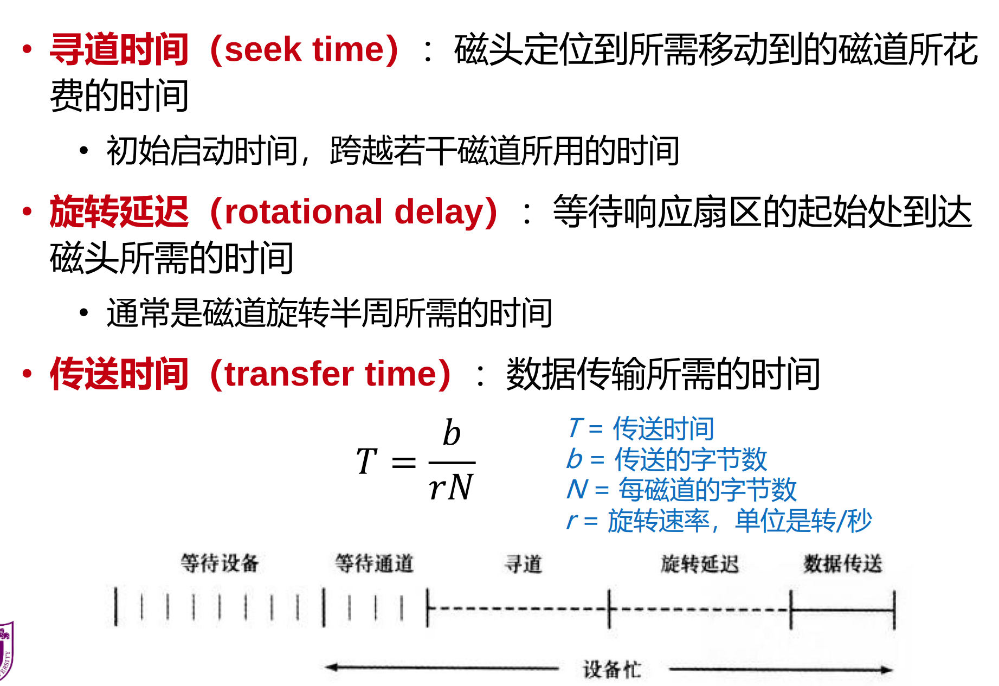
当连续访问多个相邻的磁道时，跨越磁道：
对于每个磁道都需要考虑旋转延迟
通常只需要考虑第一个磁道的寻道时间，但在明确知道跨越每
个磁道需要的时间时需要考虑
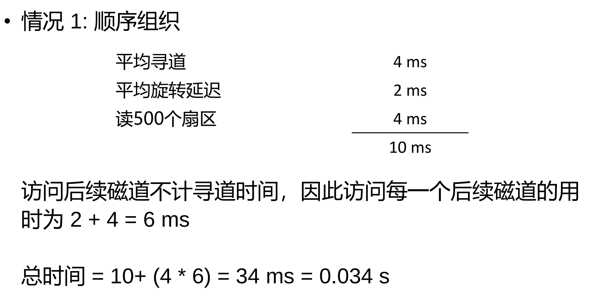
结构和数据冒险
结构冒险（Structural Hazard）
数据冒险（Data Hazard）
控制冒险（ControlHazard）
在CPU的流水线设计里，固然我们会遇到各种“危险”情况，使得流水线里的下一条指令不能正常运行。但是，我们其实还是可以通过“抢跑”的方式，“冒险”拿到了一个提升指令吞吐率的机会。流水线架构的CPU，是我们主动进行的冒险选择。我们期望能够通过冒险带来更高的回报
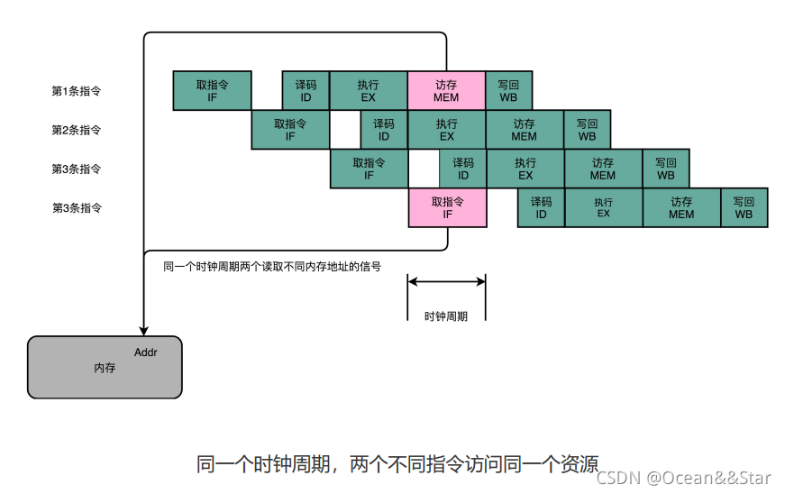
对于先后读写的情况，可以考虑用下面这种方式解决：
解决：通过流水线停顿解决数据冒险
除了读之后再进行读，可以发现，对于同一个寄存器或者内存地址的操作，都有明确强制的顺序要求。而这个顺序操作的要求，也为我们使用流水线带来了挑战。因为流水线架构的核心，就是在前一个指令还没有结束的时候，后面的指令就要开始执行。
所以，我们要有解决这些数据冒险的方法。其中最简单最泵的一个方法，就是流水线停顿 （Pipeline Stall），或者叫流水线冒泡（Pipeline Bubbling）。
简单来说，就是如果我们发现了后面执行的执行，会对前面执行的指令有数据层面的依赖关系，那么最简单的方法就是“等一等”。我们在进行指令译码的时候，会拿到对应指令所需要访问的寄存器和内存地址。所以，在这个时候，我们能够判断出来，这个指令是否会触发数据冒险。如果会触发数据冒险，我们就可以决定，让整个流水线停顿一个或者多个周期。
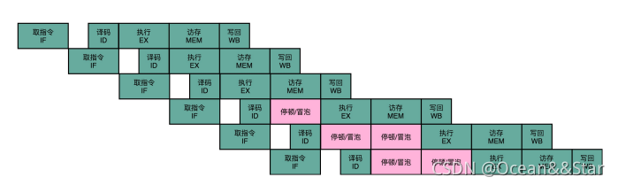
虚拟存储器
为了将更多地任务装入主存，可以考虑使用交换技术（分页和分区），以及虚拟存储器（每次仅调用需要的页面）
分区：分 区方式将主存分为两大区域，存放操作系统是系统区和存放用户程序的用户区（浪费空间）
调整：可变长分区：根据任务所需分配内存，利用率提高，但是会累积内存碎片
分页：将主存分为固定长的页框， 每个任务也被划分为固定长度的程序块，称为页 ，将页装入页框中，无需连续的页框
逻辑地址：指令中的地址
物理地址：实际主存地址
流程
访问虚地址读取虚页号 → 访问基址寄存器读取页表起始地址 → 拼接起始地址和虚页号得到页表地址 → 依据页表地址访问对应的页表项 → 根据装入位判断是否命中
命中 → 对应的实页号 + 页内地址 = 实地址 → 执行Cache的映射操作
未命中 → 利用 I/O 系统将页调入主存 → 执行第②步
【2011 统考真题】某计算机存储器按字节编址，虚拟（逻辑）地址空间大小为 16MB，主存（物理）
地址空间大小为 IMB，页面大小为 4KB；Cache 采用直接映射方式，共 8 行；主存与 Cache 之间交
换的块大小为 32B。系统运行到某一时刻时，页表的部分内容和 Cache 的部分内容分别如下的左图
和右图所示，图中页框号及标记字段的内容为十六进制形式。
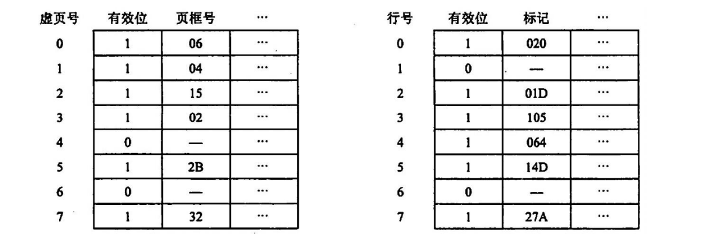
回答下列问题：
- 虚拟地址共有几位，哪几位表示虚页号？物理地址共有几位，哪几位表示页框号（物理页
号）？ - 使用物理地址访问 Cache 时，物理地址应划分成哪几个字段？要求说明每个字段的位数及在
物理地址中的位置。 - 虚拟地址 001C60H 所在的页面是否在主存中？若在主存中，则该虚拟地址对应的物理地址是
什么？访问该地址时是否 Cache 命中？要求说明理由。 - 假定为该机配置一个四路组相关联的 TLB，共可存放 8 个页表项，若其当前内容（十六进
制）如下图所示，则此时虚拟地址 024BACH 所在的页面是否存在主存中？要求说明理由。
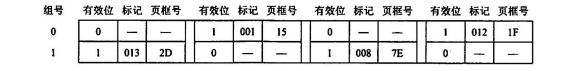
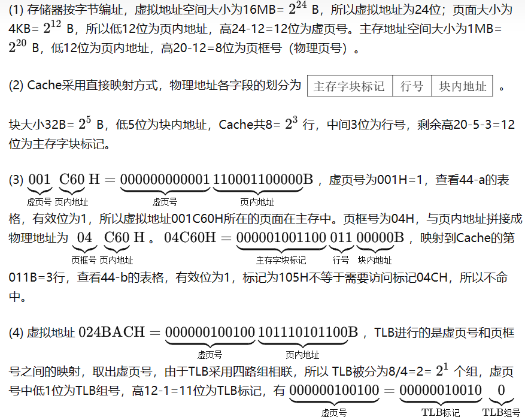
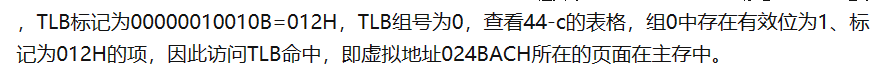
寻址
立即寻址：采用立即数寻址的方式
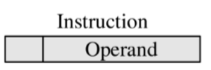
寄存器寻址：即访问寄存器，方式为直接写出寄存器号
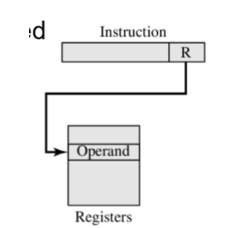
直接寻址：指令直接包含操作数的有效地址
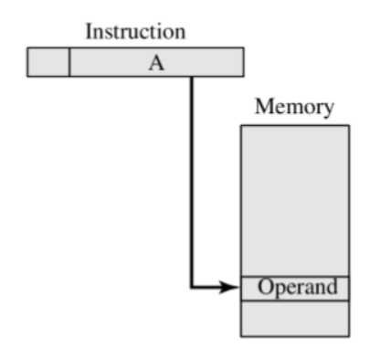
（寄存器）间接寻址：操作数有效地址在寄存器中
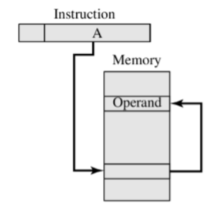
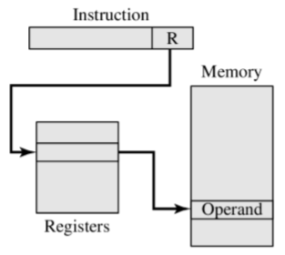
相对寻址：有效地址是就是PC(（程序计数器）加偏移量
栈寻址：栈指针保存在寄存器中，即与栈相关的是一个指针，他的值是栈顶指针
总线
即所谓的BUS，总线是一种描述电子信号传输路线的结构形式，是一类信号线的结合
总线分为内部总线、系统总线和通信总线 。内部总线指芯片内部连接各元件的总线。系统总线指连接计算机各部件的总线。外部总线则是计算机系统之间或计算机系统与其他系统之间的通信。
系统总线 的基本组成：
数据总线，传送数据信息。
地址总线，传送地址信息。
控制总线，传送控制信息(完成总线操作功能)。
电源线，为系统提供电源信号。（可忽略）
总线的功能：数据传输、多设备支持（USB）,中断，错误处理
总线的性能指标
1，总线宽度：数据线的根数
2，标准传输率：每秒传输的最大字节数
3，时钟同步/异步：同步、不同步
4，总线复用：地址线与数据线复用
5，信号线数：地址线、数据线和控制线的总和
6，总线控制方式：突发、自动、仲裁、逻辑、计数
7，其他指标：负载能力
总线传输的四个阶段：
①申请分配阶段：分配下一周期的总线使用权，包括传输请求、总线仲裁。
②寻址阶段：取得主模块要访问的从模块的地址和命令。
③传输阶段：主模块和从模块进行数据交换，单向或双向。
④结束阶段：信息从总线撤除，让出总线使用权。
猝发传输方式：在一个总线周期内传输存储地址连续的多个数据字，也就是说一次传输一个地址和一批地址连续的数据。
总线的带宽（即单位时间内可以传输的总数据数）可以用公式计算：
总线带宽=频率×8/宽度(Bytes/sec)
总线可以被多个设备监听，但同一时刻只能由一个设备发送数据
当多个设备申请总线时，由于总线一次只能传一条数据，考虑采用“仲裁”的方式分配：
集中式仲裁：一个硬件设备负责分配时间，进行仲裁。
菊花链
计数器
独立请求式
分布式：所有模块共享总线，并且各自都有都有访问逻辑。
自选
冲突探测
菊花链
每个设备依次按照优先级连接，由仲裁器发出信号依次询问
优点:简单、方便添加设备
缺点:不能保证公平、对错误敏感、速度限制
计数器
每个设备有一个ID号，由仲裁器在总线上叫号轮流询问
优点:公平、对错误不敏感
缺点:增加了线路、需要解码来匹配每个设备ID
独立请求式
每个设备与仲裁器由两根线连接一根请求一根回复
仲裁器决定响应：（决定方法：固定的顺序、LRU、FIFO...）
优点:响应快、可编程
缺点:复杂控制电路、更多的控制线
自选
固定优先级
高级的设备可以在线上设置请求，只有搞得设备没设置请求时，低的设备才能设置请求。
每个设备连到总线上发送请求,自我决定(N根线连N个设备,线越少的优先级高)
冲突探测
设备自己检测能不能用总线。
当两个设备同时请求使用总线时，总线自动停止数据传输，经过一个随机的时间后再开始工作。
时序：（同步、异步、半同步与分离事务）
同步
总线上:地址+数据1+数据2……
优点：简单
缺点：所有设备需要使用同一个时钟周期

异步
总线上:地址+数据1+数据2……
握手(handshaking)
优点：能让不同速度的设备有弹性
缺点：噪声敏感、接口复杂
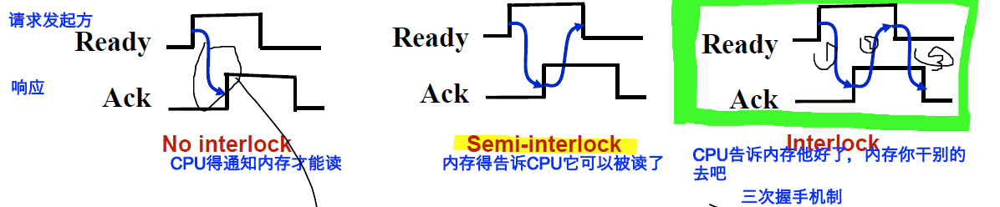
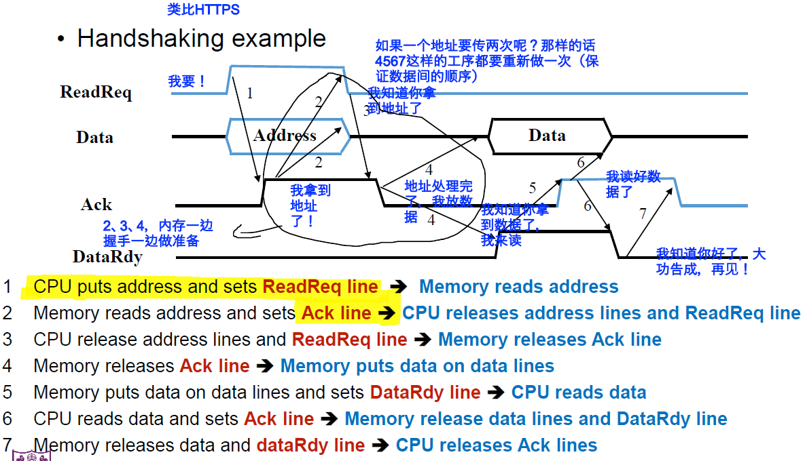
半同步：
减少噪声
在每次时钟周期的两边都可传输
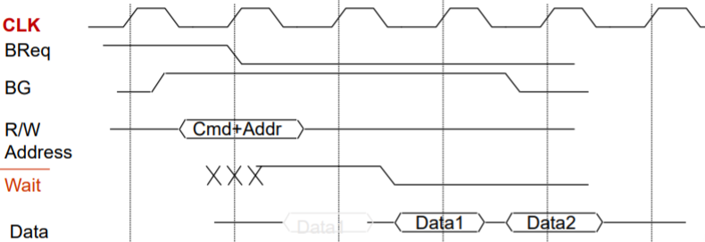
分割：把一次操作变成两次
优点：增加总线利用
缺点：增加总线交互时间以及系统复杂度
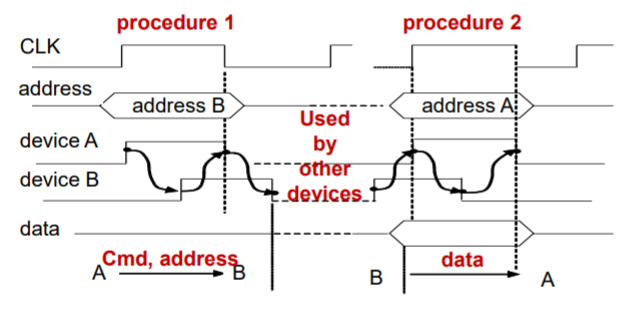
总线的用途区分：专用总线->始终只负责一项功能，或者始终分配给特定的计算机组件
复用总线：多种用途的总线，可以节省成本，但是性能会降低也需要更加复杂的控制电路
例题：
假设同步总线的时钟周期为50ns， 每次传输需要一个时钟周期 ，
异步总线每次握手 需要40ns。两个总线都是32位宽，内存的数
据准备时间为200ns。当从存储器中读出一个32位的字时，计算
两个总线的数据传输速率。
同步总线
发送指令和地址到内存：50ns
内存准备数据：200ns
将数据传输到CPU：50ns
数据传输速率 = 32bit / (50 + 200 + 50)ns = 106.7Mbps
异步总线
步骤1：40 ns
步骤2、3、4 / 数据准备：max(40ns* 3,200ns) = 200ns
步骤5、6、7：40ns * 3 = 120ns
数据传输速率 = 32bit / (40 + 200 + 120)ns = 88.9Mbps
提高总线的数据传输率
提高时钟频率
增加数据总线宽度
每次传输更多的数据（成本：更多的总线线路）
块传输
传输一次地址就传输一块数据（成本：高复杂性）
分离总线事务
减少总线空闲时间（成本：复杂性高，增加每个事务的持续时间）
分离地址线和数据线
同时传输地址和数据（成本：更多的总线线路）
数据通路
CPU任务
取指令 ：从存储器读取指令
解释指令 ：对指令进行译码，以确认所要求的动作
取数据 ：指令的执行可能要求从存储区或I/O模块中读取数据
处理数据 ：指令的执行可能要求对数据完成某些算数或逻辑运算
写数据 ：执行的结果可能要求写数到存储器或I/O模块
校验码
海明码是一种多重奇偶校验码，它通过在数据位之间插入多个校验位来扩大码距，实现对数据编码的检错和纠错。海明码是基于偶校验的，每个校验位都对应一组数据位，这些数据位的位置是校验位的二进制表示中包含 1 的位数。例如，校验位 P1 对应的数据位是 H3, H5, H7, H9, …，因为这些位置的二进制表示中都有第 1 位为 1。校验位的值是通过对它所对应的数据位进行异或运算得到的，使得每一组校验位和数据位中 1 的个数为偶数。当接收到编码数据时，可以通过对每一组校验位和数据位再次进行异或运算，得到一个错误向量，这个错误向量的二进制表示就是出错的位置。如果错误向量为 0，说明没有错误；如果错误向量不为 0，说明有一位错误，可以通过取反来纠正。如果有两位或以上的错误，海明码无法纠正，只能检测出错误。
下面是一个例子，假设数据为 01101001，需要编码成海明码：
首先，根据公式 2^k − 1 ≥ n + k，确定校验位的个数，这里 n = 8，k = 4，总共 12 位。
然后，确定校验位的位置，这里是第 1, 2, 4, 8 位，其他位是数据位。
接着，确定校验关系，根据校验位的二进制表示，可以得到如下的表格：
| 校验位 | 数据位 |
|---|---|
| P1 | H3 H5 H7 H9 H11 |
| P2 | H3 H6 H7 H10 H11 |
| P4 | H5 H6 H7 H12 |
| P8 | H9 H10 H11 H12 |
- 然后，计算校验位的值，通过对每一组数据位进行异或运算，得到如下的结果：
| 校验位 | 数据位 | 值 |
|---|---|---|
| P1 | 10101 | 0 |
| P2 | 11011 | 1 |
| P4 | 1001 | 1 |
| P8 | 0000 | 0 |
- 最后，将校验位和数据位组合起来，得到海明码为 011010001001。
如果接收到的海明码为 011010001011，可以通过以下步骤进行检错和纠错：
- 首先，对每一组校验位和数据位进行异或运算，得到如下的结果：
| 校验位 | 数据位 | 值 |
|---|---|---|
| P1 | 10111 | 1 |
| P2 | 11011 | 1 |
| P4 | 1001 | 1 |
| P8 | 0011 | 1 |
然后，将这些结果组合起来，得到错误向量为 1111，这个二进制表示就是出错的位置，也就是第 15 位。
接着，将第 15 位取反，得到正确的海明码为 011010001001。
最后，去掉校验位，得到原始数据为 01101001。